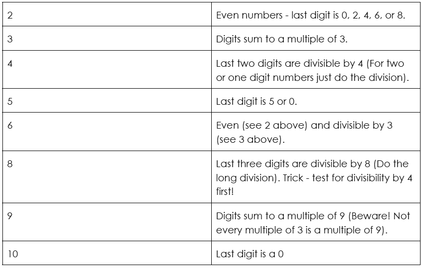

Chart
Here is a simple overview of the easy ones:
What about the harder ones, like 7, 11, and 13? Scroll down to learn some tricks your school teachers never told you!
11
Take the digits of the number and sequentially subtract/add the digits. If your end result is a multiple of 11 or 0, then your number is a multiple of 11.
Example
13578158
1-3+5-7+8-1+5-8 = 0
Therefore, 13578158 is a multiple of 11!
Example 2
33454644
3-3+4-5+4-6+4-4 = -3
Therefore, 33454644 is not a multiple of 11.
Example 3
10875073
1-0+8-7+5-0+7-3 = 11
Therefore, 10875073 is a multiple of 11!
Odd numbers that do not end in 5:
Let us use the number 69542, a random number. Say we want to test for divisibility by 13. Each step, our goal
is to make the last digit a zero, we can either add or subtract a multiple of 13.
13*4 = 52
We
subtract 52 to calculate: 69542-52 = 39490. Since dividing by ten does not affect divisibility by 13 (but it
does to multiples of 5), we can remove the last 0 to find 3949.
13*3 = 39
3949-39 = 3910.
Remove the zero to calculate: 391.
13*7 = 91
391-91 = 300
We can remove 2 zeros!
Our last digit is 3, which is definitely not divisible by 13. If it were, we would end at a multiple of 13, like
26 or 65. In that case, we could end there and say that our number was divisible by 13.